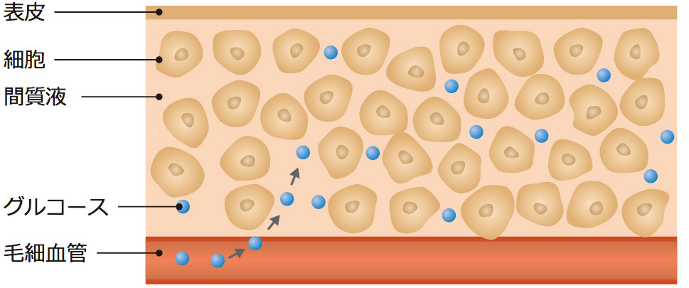

測定方法編
血糖コントロールを自分でしていくには、どのような方法があるのか、みていきましょう。
| 血糖自己測定の仕方 | 血糖測定の種類 |
血糖自己測定の仕方
血糖自己測定には簡易血糖測定器を使用します。
近年の簡易測定器の進歩は目覚ましく、小型、軽量、薄型なのはもちろん、だれにでも簡単に操作できるように工夫されています。 最近では、1 日数回の自己血糖測定によるポイントでの血糖値を知るだけではなく、
24時間連続して血糖の変動を測定できる機器 も登場しました。 そのおかげで、より質の良い血糖コントロールが可能になってきています。
血糖測定の種類
血糖測定方法には、血液中のブドウ糖を測る方法と、間質液という細胞周囲を満たしている液体中のグルコース、つまりブドウ糖を測定する方法 があります。
血糖値については、多くのみなさんが耳にしたことがあると思います。血糖値は血液中のブドウ糖の濃度のことで、
血液1dL 中にブドウ糖が何ｍｇ含まれているかを示す値のことですよね。では、間質液中グルコース値とはいったいどのような値のことをいうのでしょうか。 間質液中グルコース値は間質液1dL
中にグルコースつまりブドウ糖が何㎎含まれているかを示す値です。ここまで読み進めてきて、 「あれ？間質液中グルコース値は血糖値とは違うものなのに、どうして血糖コントロールに使えるの？」と、疑問に思っている方もいるのではないでしょうか。
その答えを知るために、私たちの体の中でブドウ糖、すなわちグルコースがどのような動いているのかをみてみましょう。
図：グルコースの動き

グルコースは、図のように毛細血管と間質液の間を自由に動き回っています。
血液中のグルコースが増えると、間質液中のグルコースも増えて、 逆に血液中のグルコースが減ると、間質液中のグルコースも減っていきます。つまり、血液中のグルコース値と間質液中グルコース値は相関性をもっているのです。
そして、ある時点における血液中のグルコースの濃度は、約 5 ～ 10 分遅れて間質液中のグルコースの濃度として反映され、測定することができます。 そのため、血糖コントロールのために、血糖値も間質液中のグルコース値も使うことができるのです。
グルコース値を測ることのメリットは穿刺によって自分の血液をとらずに血糖測定が可能なこと。一方のデメリットは、血糖値がグルコース値に反映されるまでに5～10分ほどのタイムラグが挙げられますが、このタイムラグが治療の決定になんらかの影響を及ぼすことは少ないと考えられています。
一方、血糖値を測ることのメリットはなんといっても、その時点での血糖値がすぐに分かること。デメリットは穿刺という負担があることです。
グルコース値を測定する方法としては、Flash Glucose Monitoring（FGM）、Continuous Glucose Monitoring（CGM）、血糖を測る方法としては Self-Monitoring Blood Glucose（SMBG）が挙げられます。
血糖自己測定では、血糖値あるいは間質液中のグルコース値いずれか、または両方を測定することで血糖コントロールに活かしていきます。メリット、デメリットを良く知ったうえで、自分のライフスタイルにあった測定方法を主治医と相談しながら選び取っていきたいですね。
間質液中グルコース値とは？
間質液という細胞の周りを満たす液体中のグルコース値のこと。血糖値を反映する指標として用いられます。
血糖自己測定の仕方
FGMとは
採血をすることなく、皮下の血管と細胞の間を満たしている間質液という液体のグルコース値を、体につけた小型のセンサーにより連続して測定する方法
のことをいいます。
FGMによる測定は、良質な血糖コントロールを保つことが難しい人に有用ですが、特に、「針を刺して指から 血を採るのが苦痛で続けることが難しかった」「人目が気になって血糖自己測定の実施が困難だった」などの理由で、
いままで別の血糖測定ではうまくいかなかった人に向いています。
センサーは防水加工されているため、装着したままの入浴や、水泳などをすることが可能で、患者さんのライフスタ イルを妨げることが少なくなりました。
また、1つのセンサーで最長14日間測定をセンサーでスキャンすることにより今まで気づきづらかった夜間の低血糖や、 食後高血糖をも捉えることができます。これらのデータを治療に活かすことで、血糖コントロールのさらなる向上に
役立つことが期待されます。
なお、FGMの最大のメリットの一つに採血が不要ということが挙げられますが、万が一低血糖や高血糖が疑われた場合には、血液を採って、血糖値を測定するSMBGによる検証が必要となります。
CGMとは
体につけた小型のセンサーで、皮下の間質液という液体のグルコース濃度を連続して測定する方法のことをいいます。FGMとの違いは、CGMでは 機器による計測値と、実際に指先から血液を採って測定した血糖値とを比べて数値を補正する操作（較正）が必要な点です。この操作は、1日数回必要となります。
CGMは、連続測定によりSMBGでは捉えづらかった夜間の低血糖や、無自覚性の低血糖の発見などに役立つことから、今まで以上に良好なコントロールの維持に役立つことが期待されます。
センサーは防水加工してあるので、入浴やシャワーなどの日常生活を妨げる心配なく使用することができます。
SMBGとは
SMBGは血糖自己測定器を使用し、自分で採血をして、血液の中に含まれるブドウ糖の量を測る方法
のことをいいます。
SMBGは、血糖コントロールがうまくいかない人に有効な方法ですが、特に「自己注射療法をしている人」、「妊娠している人あるいは妊娠を希望している人」、「糖尿病以外の病気にかかった場合（シックデイ）」、「ポンプ療法などの特殊なインスリン療法をしている人」、「治療中に、いつもと状態が違うと感じた人」に役立ちます。
最近の機器はとても進化していて、採取する血液の量はごく少量で、短い時間で血糖値を測ることができます。
血糖測定の種類別 特徴とメリット
| FGM | CGM | SMBG |
|
|
|
血糖測定の種類別 デメリット
| FGM | CGM | SMBG |
|
|
|
血糖自己測定を活用して、良質な血糖コントロールを
血糖自己測定は、診察室だけではなく、患者さん自身の日常生活におけるさまざまなシーンで血糖がどのように変化しているのかを正しく知って、適切に対応し、血糖コントロールを良好に保つために行います。
FGM、CGM、SMBGで測定して得たデータは、合併症の予防や抑制、また低血糖やシックデイの対処のためにも役立ちます。
日常生活の質を良好に維持するために大きな助けとなる血糖自己測定を活用し、日々の血糖コントロールを適正に保っていきましょう。